第四篇 · 执行引擎与动态编译
第 14 章 方法调用与动态分派
方法解析确定可用的符号方法，接收者决定本次覆盖目标；运行画像再帮助编译器把常见路径缩短。
从现象开始
同一个call方法先只见First，随后轮换四种接收者。源码没有改动，编译策略却需要适应。技术基线为Java开发工具包（Java Development Kit，JDK）25.0.5.0.2与macOS AArch64；前置是第7章的解析和第13章的执行形态。
14.1 调用指令分类
14.1.1 同样写成括号调用，语义不同
静态调用invokestatic没有接收者；invokespecial处理构造器、父类限定调用等特殊语义；invokevirtual依据接收者的类选择覆盖实现；invokeinterface以接口方法为符号入口并检查接收者实现关系。第15章再讨论由引导方法链接的invokedynamic。指令分类决定解析和选择规则，不等于固定的机器码开销等级。
本例staticValue产生静态调用，new First涉及构造器特殊调用；Base变量的label是虚调用，First.label内的super.label是特殊调用，call中的Operation.apply是接口调用。局部变量声明类型不会把new First对象改造成Base对象。空接收者检查与方法查找也必须按相应指令的异常顺序处理。
| 指令 | 本例位置 | 接收者与语义 |
|---|---|---|
| invokestatic | staticValue | 无接收者，按已解析静态目标 |
| invokespecial | First构造器、super.label | 按构造／父类限定规则 |
| invokevirtual | base.label | First接收者选择覆盖方法 |
| invokeinterface | Operation.apply | 同一调用点可遇四种接收者 |
14.1.2 重载不在每次调用时重选
Java编译器依据实参表达式的声明类型与适用规则选中名称、参数和返回描述符。若同时存在f(Object)和f(String)，传入声明为Object、实际指向String的变量，普通Java调用不会在运行时自动改选f(String)。覆盖则沿已选签名，根据接收者决定实现；泛型擦除产生的桥接方法还会影响字节码层面实际入口。
因此分析调用先保存javap所见的指令、引用持有类、名称和描述符，再问接收者是什么。只看到一行service.run()，无法判断源码重载、接口选择与编译内联各自发生在哪里。
14.2 解析、选择与目标
本节配图：CH14-F01。
14.2.1 解析先建立可用的方法语义
LinkResolver::resolve_virtual_call把工作分成linktime_resolve_virtual_method和runtime_resolve_virtual_method。前者按符号引用查找方法并执行相应链接检查；后者结合实际接收者类确定selected_method。符号引用解析可以缓存，不能由“已经解析”推出此后所有接收者都调用相同覆盖实现。
访问检查涉及声明类、调用者、成员访问级别及模块等，属于能否合法使用该引用。方法选择再回答本次执行哪个实现。解析失败、接收者为空或选中抽象方法是不同条件，书内正常示例没有主动制造这些错误。

14.2.2 resolved与selected可以不同
本例base.label的声明来自Base，实际接收者是First，最终执行First.label；它再用super.label进入Base.label，结果11。解析结果保留签名及合法性依据，选择结果决定本次行为。静态绑定或不可覆盖目标可使二者重合，普通虚分派则需考虑接收者。
接口默认方法、多个接口继承与特殊父接口调用各有规范限制，不能只从“类里有没有同名方法”推导全部规则。本章按第7章的解析／选择边界继续，链接错误和初始化顺序仍归原章节。
14.3 方法表与调用点缓存
本节配图：CH14-F02。
14.3.1 表把重复查名字转成索引工作
HotSpot为适当的虚方法组织虚方法表（virtual method table，vtable），覆盖方法占据相应槽位。锁定runtime_resolve_virtual_method读取解析方法的vtable_index，再从接收者类取同槽方法；某些可静态绑定目标使用非虚索引直接返回原方法。私有方法不因名字相同而成为覆盖项。
接口方法表（interface method table，itable）还要找到接收者所实现接口的对应区域，再依据接口方法索引选入口。klassVtable.cpp中的初始化逻辑处理覆盖和默认方法等约束。vtable／itable是HotSpot组织分派的手段，Java虚拟机规范（Java Virtual Machine Specification，JVMS）不要求每次虚调用都必须访问一张表；内联后可能完全没有该访问。
14.3.2 缓存命中与运行时未命中
编译调用点的内联缓存（Inline Cache，IC）可保存接收者类与目标入口，命中时少走通用查找。这里的“内联缓存”是术语，不能等同把方法体复制进调用者的“方法内联”。锁定CompiledIC通过set_to_monomorphic与set_to_megamorphic设置相应入口；未命中处理会根据CallInfo重新选择策略。

通用策略可借助vtable／itable桩，代码失效又需要清理旧入口。图不是规范状态机，也不保证每个调用先单态、再双态、再多态。编译器生成的多个类型守卫、解释器解析缓存和编译调用点IC属于不同层次，不能把同一份TypeProfile计数直接当作IC状态转储。
14.4 接收者类型分布
本节配图：CH14-F03。
14.4.1 画像属于调用点与时间窗口
call方法只有一个Operation.apply调用点，却可接收数组里的四种对象。第一阶段100000次都使用First；第二阶段200000次按索引轮换四类型。它在源码里一直是一条接口调用，运行画像却发生变化。画像收集范围、槽位数量、采样和编译时机都受实现与配置约束，不能把有限记录当成未来全量分布。
本轮第一份服务端编译器（Server Compiler，C2）内联记录给出First的5119／5119计数并inline (hot)。这是编译决策时看到的局部证据，不是精确统计源代码执行的100000次，也不代表该调用点永久单态。
14.4.2 阶段改变会要求另一套策略
进入四接收者阶段后，原C2版本被标记made not entrant: uncommon trap，并出现新的C2编译。此后日志仍显示First占主导的画像，其他类型可能走未内联回退；不能因为输入有四类型，就写成编译器必然把四个目标全部内联或立刻采用某个固定多态阈值。
所有实现类在第一阶段前已实例化。本轮能够区分“已有类型开始出现于调用点”和“新类加载破坏类层次依赖”，却没有测量缓存未命中次数或吞吐量。第18章将专门追踪陷阱原因与状态恢复。
14.5 去虚化与内联
14.5.1 目标确定使后续优化看见方法内部
去虚化把一次动态目标选择收窄为可直接调用或内联的实现。final约束、编译器已知的精确对象类型、类层次分析（Class Hierarchy Analysis，CHA）及运行画像能提供不同强度的依据。内联后value+1成为调用者数据流的一部分，常量传播、范围推导和分配分析才有机会跨过原方法边界。

14.5.2 保证、守卫与依赖分别看
不可覆盖目标具有语言／类型约束；画像推测通常需要运行时类型守卫，未通过则转慢路径或陷阱；类层次假设可登记依赖，相关类型变化时使代码失效。并非所有优化依赖都必须在每次调用现场做相同守卫，也并非每个未命中都会去优化。
本轮用CompileCommand禁止call整体被主循环内联，便于独立观察它内部的分派；apply仍允许内联。因此结果只说明这组显式配置下的策略，不能声称等同完全默认运行。打印机器码选项因缺hsdis只得到字节与注释，未把它当作已解码汇编指令。
证据与复做
CH14-O01保留字节码、编译层级、内联、机器码字节及完整编译日志。阶段结果依次为5000050000、25000450000。call先经历第3层与第4层编译，C2版本在四类型阶段陷阱失效并重编译。时间只用来关联同进程事件，不作为调用性能统计。
回顾与边界
排查调用变化时，先固定调用点和描述符，再看接收者画像、实际编译目标及失效记录。单态源码、单态画像和单态缓存是三个问题；接口调用也可以被内联，静态调用也可能因预算未被内联。
来源
- S01：Java虚拟机规范（Java Virtual Machine Specification，JVMS）25 §5.4.3与§5.4.6及语言规范§15.12。
- S02：锁定实现linkResolver.cpp、klassVtable.cpp。
- S03：compiledIC.cpp与调用运行时；精确符号见索引。
- O01：本轮运行及编译记录。